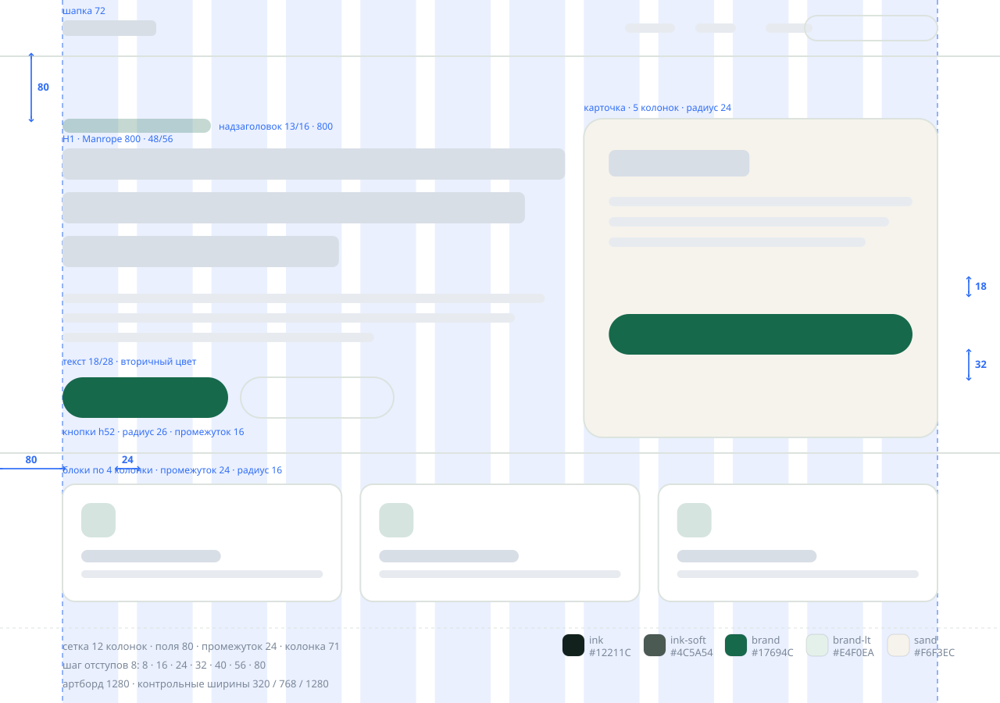

Сетка и отступы
Колонки, поля и промежутки те же, что в макете. Отступы кратны шагу 8 — их видно в коде: gap: 24px, padding: 0 80px.
Вёрстка по макету
Так выглядит моя работа с чужим макетом: беру сетку, отступы, шрифты и цвета из макета и повторяю их в коде — без «примерно так же». Ниже можно наложить сетку на готовый сайт и переключить ширину экрана.

Не «на глаз»: по каждому пункту есть, что показать заказчику. Если в макете чего-то нет — спрашиваю до вёрстки, а не додумываю.
Колонки, поля и промежутки те же, что в макете. Отступы кратны шагу 8 — их видно в коде: gap: 24px, padding: 0 80px.
Семейство, начертания и размеры из макета: H1 48/56, текст 18/28. Шрифт кладу на сайт, чтобы страница не зависела от чужих серверов.
Обычное, наведение, нажатие, фокус с рамкой, выключенная кнопка. У полей — наведение, фокус и ошибка. В макетах это часто не нарисовано, поэтому делаю и показываю.
Проверяю на трёх ширинах: ничего не уезжает за край, кнопки не слипаются, текст переносится. Переключатели рядом — можно посмотреть самому.
Картинки сжимаю, лишних библиотек не подключаю. Эта страница вместе с макетом весит — и не делает ни одного внешнего запроса.
Галочка согласия не предустановлена, кнопка не работает без неё, текст согласия — отдельной страницей. Проверка полей с понятными ошибками.
Обычно такие значения я выписываю из макета перед началом работы и согласовываю, если чего-то не хватает.
Что считаю отдельной работой, чтобы не было недопонимания:
Правки макета после сдачи. Если дизайн меняется, когда вёрстка уже готова, это отдельная задача с новой оценкой.
Дорисовка недостающих экранов. Могу собрать мобильную версию по логике десктопа, но это решение согласовываю и оцениваю отдельно.
Тексты и фотографии. Верстаю то, что есть в макете; писать тексты и искать картинки — не входит.
Подключение к CMS и серверная часть. Отдаю чистый HTML, CSS и JavaScript; интеграция — отдельно.